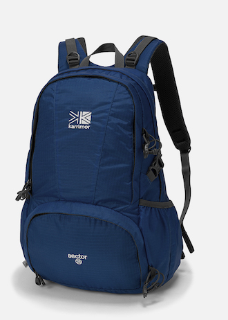

バックパック¶
Karrimor デイパック セクター 25L¶
| 使用期間 | 2013/07/14- |
|---|---|
| 公式サイト | sector 25 | Karrimor Japan |
| 購入サイト | Amazon |
- 着替えとかいっぱい持ちたいけど、コロコロは嫌だったので背負えそうなギリギリのところをチョイス

公式サイトより
Côte&Ciel Rhine Flat Backpack¶
| 使用期間 | 2014/01/20- |
|---|---|
| 公式サイト | EvernoteMarket |
| 購入サイト | EvernoteMarket |

公式サイトより
- 2014年の1月頃にこんな話題もあった
- いわゆるリュックサックじゃなくてPCを入れる部屋がある(かつ、ちょっと保護されてるくらいの部屋)バックパックが欲しいなーと思って購入
- それまではワンショルダーのビジネスバッグ的なものを使っていて、歩くのもしんどかったので劇的に改善した
- 背中と接触する面は特にメッシュなどになっていないので、夏場は汗でひどいことに…
- 仕切りがあまりないので、PC以外のものを入れるのがちょっとしんどい(xx用、xx用とポーチとか入れないと中でグチャグチャになる)
- 自立させるのがちょっとめんどい
AYANOKOJI 縦型がま口ボディバッグ¶
| 使用期間 | 2015/07/26- |
|---|---|
| 公式サイト | AYANOKOJI オンラインショップ |
| 購入サイト | Ayanokoji Tokyo Labo., – あやの小路東京ラボ | AYANOKOJI - あやの小路 |

公式サイトより
- 普段使い用にはRhine Flat Backpackで事足りてるんだけど、PC(MacBook Airの11型)だけ持って移動したいと思った
- MacBook Air 11型が奇跡的にすっぽり入る。やったね
- あとは以下のものを入れても、ギリギリ大丈夫かな
- MacBookの電源
- iPad mini
- モバイル充電器
- モバイルWi-Fi
- がま口にこだわりのある会社のようで、がま口がついているので、ここに電源とか入れられて便利
- オーダーメイドとかにも対応してくれる模様
- 汗に弱い？ちょっと移動するだけで汗で変色してしまう(夏場)
購入したもの
- 説明書に最初に防水スプレーかけてくださいって書いてあった
説明書